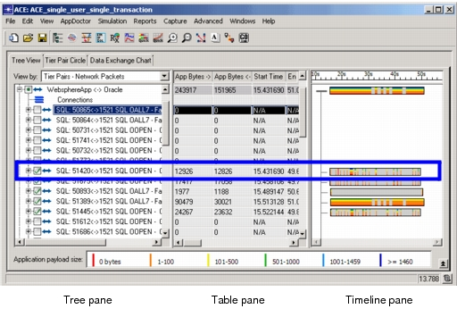

<?xml version="1.0" encoding="utf-8"?>
<!DOCTYPE html PUBLIC "-//W3C//DTD XHTML 1.0 Transitional//EN" "http://www.w3.org/TR/xhtml1/DTD/xhtml1-transitional.dtd">
<html xml:lang="en" lang="en" xmlns="http://www.w3.org/1999/xhtml">
  <head>
    <meta http-equiv="Content-Type" content="text/html;charset=utf-8" />
    <meta http-equiv="Content-Style-Type" content="text/css" />
    <!-- MOTW-DISABLED saved from url=(0014)about:internet -->
    <title>Tree&nbsp;View</title>
    <link rel="StyleSheet" href="css/ACE_31_Tree.css" type="text/css" media="all" />
    <link rel="StyleSheet" href="css/webworks.css" type="text/css" media="all" />
    <script type="text/javascript" language="JavaScript1.2" src="wwhdata/common/context.js"></script>
    <script type="text/javascript" language="JavaScript1.2" src="wwhdata/common/towwhdir.js"></script>
    <script type="text/javascript" language="JavaScript1.2" src="wwhdata/common/wwhpagef.js"></script>
    <script type="text/javascript" language="JavaScript1.2">
      <!--
        var  WebWorksRootPath = "";
      // -->
    </script>
    <script type="text/javascript" language="JavaScript1.2">
      <!--
        // Set reference to top level help frame
        //
        var  WWHFrame = WWHGetWWHFrame("", true);
      // -->
    </script>
    <script type="text/javascript" language="JavaScript1.2">
      <!--
        function  WWHPDFLink()
        {
          return "ACE_31_Tree.pdf";
        }
      // -->
    </script>
    <script type="text/javascript" language="JavaScript1.2" src="scripts/expand.js"></script>
  </head>
  <body style="margin-left: 2%; margin-right: 2%" onLoad="WWHUpdate();" onUnload="WWHUnload();" onKeyDown="WWHHandleKeyDown((document.all||document.getElementById||document.layers)?event:null);" onKeyPress="WWHHandleKeyPress((document.all||document.getElementById||document.layers)?event:null);" onKeyUp="WWHHandleKeyUp((document.all||document.getElementById||document.layers)?event:null);">
    <div style="font-family: arial; float: right; height: 1px;"><a></a></div>
    <br />
    <div class="WebWorks_Breadcrumbs" style="text-align: left;">User Guide &gt; <a class="WebWorks_Breadcrumb_Link" href="atx_visualizing_apps_splash.html#143195">Visualizing Applications</a> &gt; Tree&nbsp;View</div>
    <hr align="left" />
    <blockquote>
      <div class="hChapter"><a name="143195">Tree&nbsp;View</a></div>
      <div class="body"><a name="143199">The Tree&nbsp;View page hierarchically arranges tier pairs, transactions, messages, connections, and packets.</a></div>
      <div class="bodyIntro"><a name="158273">The Tree&nbsp;View page, shown in the following figure, has the following panes:</a></div>
      <div class="listBullet_outer" style="margin-left: 0pt">
        <table border="0" cellspacing="0" cellpadding="0" summary="">
          <tr style="vertical-align: baseline;">
            <td>
              <div class="listBullet_inner" style="width: 14.4pt; white-space: nowrap;">•	</div>
            </td>
            <td width="100%">
              <div class="listBullet_inner"><span class="HTBlue"><a href="javascript:WWHClickedPopup('main_doc', 'ACE_31_Tree.16.2.html#158320', '');" title="Tree Pane" name="132853">Tree Pane</a></span> (left)—Shows how the individual packets or messages are organized into tier pairs, connections, and frames. You can view summary information about transactions, and view the separate transactions arranged along a timeline.</div>
            </td>
          </tr>
        </table>
      </div>
      <div class="listBullet_outer" style="margin-left: 0pt">
        <table border="0" cellspacing="0" cellpadding="0" summary="">
          <tr style="vertical-align: baseline;">
            <td>
              <div class="listBullet_inner" style="width: 14.4pt; white-space: nowrap;">•	</div>
            </td>
            <td width="100%">
              <div class="listBullet_inner"><span class="HTBlue"><a href="javascript:WWHClickedPopup('main_doc', 'ACE_31_Tree.16.3.html#48861', '');" title="Table Pane" name="132910">Table Pane</a></span> (center)—Shows statistics about individual tier pairs, connections, and frames.</div>
            </td>
          </tr>
        </table>
      </div>
      <div class="listBulletLast_outer" style="margin-left: 0pt">
        <table border="0" cellspacing="0" cellpadding="0" summary="">
          <tr style="vertical-align: baseline;">
            <td>
              <div class="listBulletLast_inner" style="width: 14.4pt; white-space: nowrap;">•	</div>
            </td>
            <td width="100%">
              <div class="listBulletLast_inner"><span class="HTBlue"><a href="javascript:WWHClickedPopup('main_doc', 'ACE_31_Tree.16.4.html#48864', '');" title="Timeline Pane" name="158294">Timeline Pane</a></span> (right)—Shows the traffic patterns and duration of each tier pair or connection over the time of the task.</div>
            </td>
          </tr>
        </table>
      </div>
      <div class="figCaptionColumn_outer" style="margin-left: 0pt">
        <table border="0" cellspacing="0" cellpadding="0" summary="">
          <tr style="vertical-align: baseline;">
            <td>
              <div class="figCaptionColumn_inner" style="width: 63.7632pt; white-space: nowrap;">Figure&nbsp;13-1   </div>
            </td>
            <td width="100%">
              <div class="figCaptionColumn_inner"><a name="57698">Tree View Page</a></div>
            </td>
          </tr>
        </table>
      </div>
      <div class="figAnchor"><a name="57701"></a></div>
      <div class="figSpaceAfter"><a name="48836">&nbsp;</a></div>
      <div class="body"><a name="158382">Additionally, you can view protocol decode information for selected packets by selecting View&nbsp;&gt; Embed&nbsp;Protocol&nbsp;Decode&nbsp;Viewer. For more information, see </a><span class="HTBlue"><a href="javascript:WWHClickedPopup('main_doc', 'ACE_51_Protocol.23.2.html#114715', '');" title="Protocol Decode Viewer">Protocol Decode Viewer</a></span>.</div>
      <script type="text/javascript" language="JavaScript1.2">
        <!--
          // Clear related topics
          //
          WWHClearRelatedTopics();

          // Add related topics
          //
          WWHAddRelatedTopic("Tier Pair Circle", "main_doc", "ACE_37_Tpc.html#44546");
          WWHAddRelatedTopic("Data Exchange Chart", "main_doc", "ACE_34_Dec.17.1.html#49110");

          document.writeln(WWHRelatedTopicsInlineHTML());
        // -->
      </script>
    </blockquote>
    <script type="text/javascript" language="JavaScript1.2">
      <!--
        document.write(WWHRelatedTopicsDivTag() + WWHPopupDivTag() + WWHALinksDivTag());
      // -->
    </script>
    <div style="font-size: 8pt; font-family: arial; text-align: left; text-decoration: none;">
      <a href="../wwhelp/wwhimpl/common/html/default.htm">Home</a> | <a href="#" title="To the top of this page">Back to Top</a><br /><br />© 2013 Riverbed Technology.
  All Rights Reserved. This software may be covered by one or more U.S. Patents. See complete patent notice in the <a href="../Notices/aceanalyst_copy_info_wwp.html">Legal Notices</a> section.<br /><a href="http://www.riverbed.com/support/" style="text-decoration: none" target="_blank"> Riverbed Support Center </a><br /></div>
  </body>
</html>